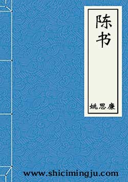

《陈书》
《陈书》是一本纪传体史书，唐朝人姚思廉所著，凡三十六卷，记南朝陈朝史。记载自陈武帝陈霸先即位至陈后主陈叔宝亡国前后三十三年间的史实，成书于贞观十年（636年）。
本纪 共6卷
- 卷一·本纪第一·高祖上
- 卷二·本纪第二·高祖下
- 卷三·本纪第三·世祖
- 卷四·本纪第四·废帝
- 卷五·本纪第五·宣帝
- 卷六·本纪第六·后主
列传 共30卷
- 卷七·列传第一·高祖章皇后等
- 卷八·列传第二·杜僧明等
- 卷九·列传第三·侯瑱等
- 卷十·列传第四·周铁虎等
- 卷十一·列传第五·黄法等
- 卷十二·列传第六·胡颖等
- 卷十三·列传第七·徐世谱等
- 卷十四·列传第八·衡阳献王昌等
- 卷十五·列传第九·陈拟等
- 卷十六·列传第十·赵知礼等
- 卷十七·列传第十一·王冲等
- 卷十八·列传第十二·沈众等
- 卷十九·列传第十三·沈炯等
- 卷二十·列传第十四·到仲举等
- 卷二十一·列传第十五·谢哲等
- 卷二十二·列传第十六·陆子隆等
- 卷二十三·列传第十七·沈君理等
- 卷二十四·列传第十八·周弘正等
- 卷二十五·列传第十九·裴忌等
- 卷二十六·列传第二十·徐陵等
- 卷二十七·列传第二十一·江总等
- 卷二十八·列传第二十二·世祖九王等
- 卷二十九·列传第二十三·宗元饶等
- 卷三十·列传第二十四·萧济等
- 卷三十一·列传第二十五·萧摩诃等
- 卷三十二·列传第二十六·孝行等
- 卷三十三·列传第二十七·沈文阿等
- 卷三十四·列传第二十八·杜之伟等
- 卷三十五·列传第二十九·熊昙朗等
- 卷三十六·列传第三十·始兴王叔陵等
- 曾巩陈书目录序